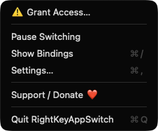
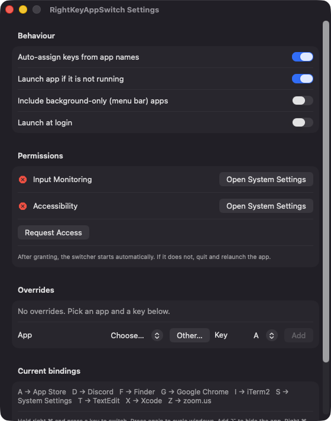

Right Command plus a key
Press right Command with a letter or digit (a to z, 0 to 9) to activate the app bound to it. A bare right Command tap and all other shortcuts pass through untouched.
Open source · macOS 14+ · Universal binary · Menu Bar Utility
Hold the right Command key and tap a letter to jump straight to an app, or tap again to cycle its windows. Letters are assigned automatically from app names, and you can override any of them.
Free & MIT licensed · Apple Silicon & Intel · Latest release

Features
A small menu bar app that turns the right Command key into a keyboard launcher for the apps you already use.
Press right Command with a letter or digit (a to z, 0 to 9) to activate the app bound to it. A bare right Command tap and all other shortcuts pass through untouched.
Press the key again while the app is frontmost to raise its back-most window. Repeated presses walk through every window, and minimized ones are restored.
Keys come from the first letter of each app name, then the second, then the next free letter. Bindings stay put as apps launch and quit, and you can override any of them in Settings.
Right Command plus slash shows a panel of app icons and their keys until you release. Add Option to a letter to hide that app instead.
Optionally open the bound app when it is not running, including apps you pick manually with Other. You can also include menu bar apps and launch at login.
Events are ignored while secure input is active, such as in password fields. There is no server, no account and no network code.
Screenshots

Install
RightKeyAppSwitch is open source and not notarized with a paid Apple Developer ID, so macOS needs one extra step the first time.
xattr -cr /Applications/RightKeyAppSwitch.app
Download
Free, forever. Built for macOS 14 Sonoma or newer, Apple Silicon and Intel.
Not notarized: on first launch right-click RightKeyAppSwitch.app → Open.
FAQ
Yes. It is released under the MIT license, with no ads, accounts or paid tiers. If it saves you time, there is an optional Support button that links to Ko-fi.
Input Monitoring is required to detect the right Command key and your letter presses. Accessibility lets the app swallow the handled key press and raise an app's windows to cycle them. It does not use Screen Recording, Microphone, Camera or any network access.
Only on your Mac. Your key overrides and settings are saved in UserDefaults, and nothing is sent anywhere because the app contains no network code.
Notarization requires a paid Apple Developer account, and this is a free project. Right-click the app and choose Open once to get past Gatekeeper, or build it from source with Xcode.
Support ❤️
RightKeyAppSwitch is a free, open-source alternative to paid utilities. If it earns a spot on your Mac, a coffee keeps the updates coming.
☕ Support Or on Ko-fi